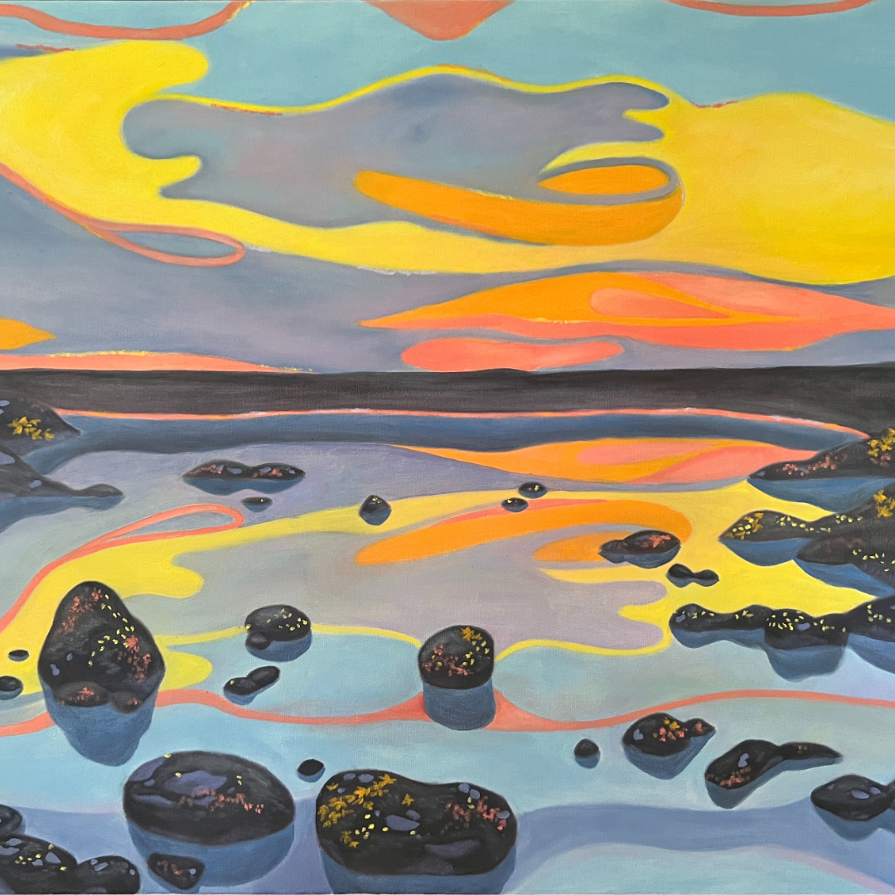
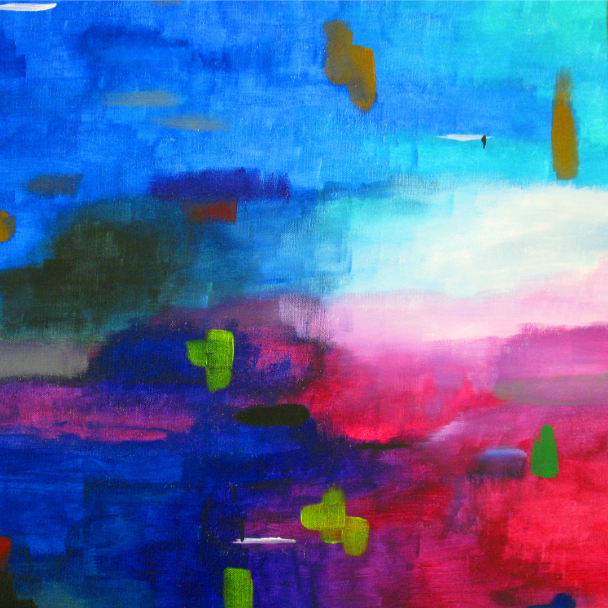
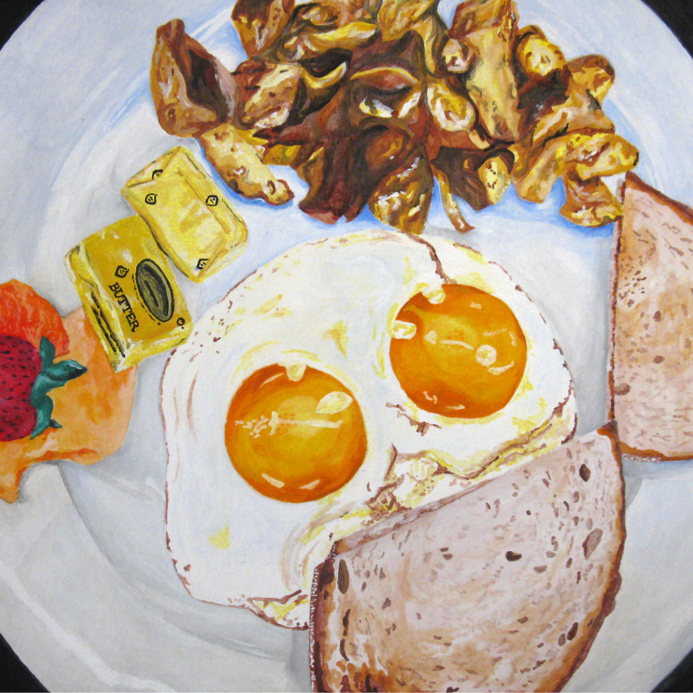

Anatomy of an Experience >>
Mind and nature

Colorfields >>
Feeling abstract

Jersey Diner >>
A study of Jack's Cafe in Westwood, NJ

Kona >>
In memoriam of a best friend

Miscellaneous >>
Paintings destined for independence